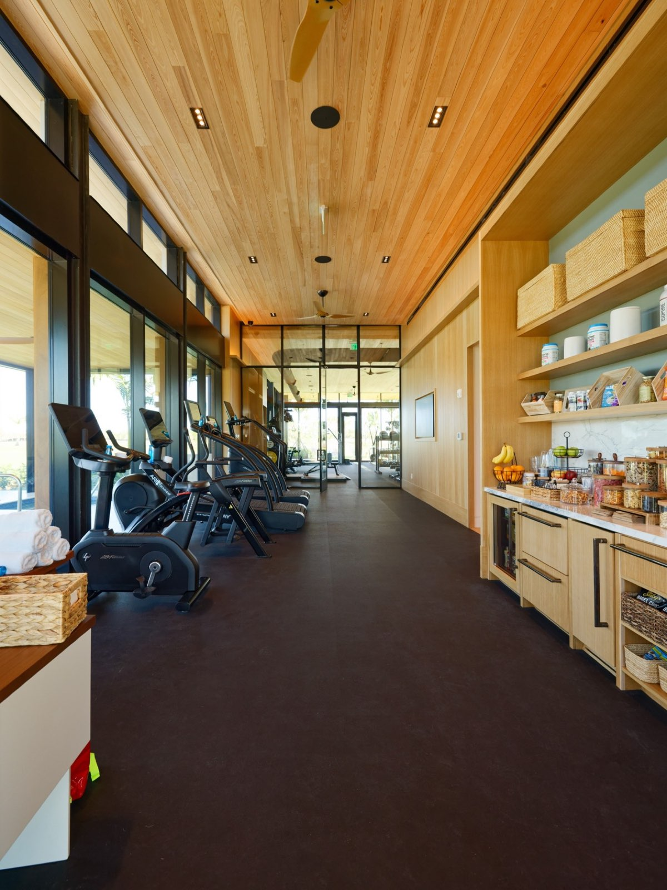

Atlantic Fields Performance Center
A high-end fitness and wellness facility at the Atlantic Fields private community — floor-to-ceiling glass designed to blur the line between the workout floor and the Florida landscape around it.

Floor-to-ceiling glass on every elevation.
The Performance Center is the crown jewel of Atlantic Fields — a fitness and wellness facility designed with dramatic glass to blur the line between interior and landscape. ACG delivered the complete storefront and curtainwall glazing package: the expansive glass walls framing the fitness floor, the entry storefront system, and the exterior glazed openings throughout the building.
Inside the Performance Center.




Photography: Atlantic Fields Club · via @atlanticfieldsclub
Precision across every system.
The scope
Precision coordination across multiple glazing systems — commercial storefront aluminum framing at the entries, curtainwall sections along the main fitness areas, and large fixed glazing units throughout the facility.
Code + aesthetic
Every system had to perform at Florida code standards while delivering the clean, minimal aesthetic the architect specified. Glass selection, frame finishes, and sightline dimensions were all held to tight tolerances.
The cardio floor
Floor-to-ceiling storefront glass runs the full length of the cardio floor, connecting the workout room directly to the courtyard outside.
The recovery terrace
Euro-Wall openings dissolve the recovery-terrace wall into the palm courtyard — the wellness program's indoor-outdoor centerpiece.
The result
A facility that looks as good as it performs: crisp storefront entries, clean curtainwall sightlines, and every unit passed inspection the first time.
The market
ACG serves the Jupiter and Hobe Sound market with the same capabilities delivered here — storefront and curtainwall packages for private club and luxury residential work.
More work at Atlantic Fields.


Have plans? Send them to Connor directly.
Fitness centers, hospitality, multifamily, commercial — ACG brings the same precision to every scope. A detailed scope comes back in 48 hours.